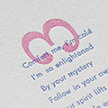
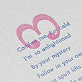

Hi, I'm Dean Davidson.
I'm a visual artist living in Bellingham, Washington, with my wife, son, two cats, frogs, and Rosie the tarantula. I specialize in graphic design with brand development, print layout, and motion graphics. As I've worked as a graphic designer, I've taken on the worlds of photo and video. I've had the pleasure of working with clients up and down the West Coast and served as an in-house graphic designer and videographer.
About Me
While growing up, we always had a Mac in the house. Getting to play with Kid Pix was my Saturday morning cartoons. Photoshop was installed soon after, and my dad made me into a green, three-eyed alien who lived on the moon. Since that close encounter, visual arts have been my passion. I remember messing around in Macromedia Extreme 3D as a tween and thinking how cool it would be do this for a living. I’m lucky to have had the support to get my Bachelor of Fine Arts in Graphic Design from Art Center College of Design in Pasadena, California, and make visual arts my living. After Art Center, I replaced the smog and concrete of Southern California with the forests, mountains, and ocean of Bellingham, Washington.
 
